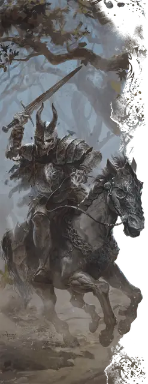

Рыцарь-скелет
Skeletal Knight
Средняя Нежить, законно-злая

Класс Доспеха 18 (латы)
Хиты 112 (15к8 + 45)
Скорость 30 футов
| мод | спас | ||
|---|---|---|---|
| СИЛ | 20 | +5 | +5 |
| ЛОВ | 10 | +0 | +0 |
| ТЕЛ | 16 | +3 | +6 |
| мод | спас | ||
|---|---|---|---|
| ИНТ | 13 | +1 | +1 |
| МДР | 14 | +2 | +5 |
| ХАР | 10 | +0 | +0 |
Иммунитет к урону яд
Иммунитет к состояниям истощение, отравление
Чувства тёмное зрение 60 футов, пассивное Восприятие 12
Языки понимает все языки, известные при жизни, но не говорит
Опасность 7 (2900 опыта)
Бонус мастерства +3
Особенности
Стойкость нежити. Если урон опускает хиты рыцаря-скелета до 0, он совершает спасбросок Телосложения Сл 5 + полученный урон, если только это не был дробящий урон или урон от критического попадания. При успехе хиты рыцаря-скелета опускаются до 1.
Необычная природа. Рыцарь скелет не нуждается в воздухе, еде, питье и сне.
Действия
Мультиатака. Рыцарь-скелет совершает три атаки Обессиливающим клинком или Метательным топором в любом сочетании.
Обессиливающий клинок. . Рукопашная атака оружием: +8 к попаданию, досягаемость 5 фт., одна цель. Попадание: 15 (3к6 + 5) урона некротического энергией, и если цель — существо, оно не может восстанавливать хиты до начала следующего хода рыцаря-скелета.
Метательный топор. . Рукопашная или дальнобойная атака оружием: +8 к попаданию, досягаемость 5 фт. или дистанция 20/60 фт, одна цель. Попадание: 14 (2к8 + 5) рубящего урона.
Описание
Рыцари-скелеты — могущественная нежить, восставшая, чтобы служить еще более порочным существам, таким как рыцари смерти. Обычно рыцарями-скелетами становятся те, кто были добродетельными при жизни, но предали свою клятву и умерли с позором. Теперь, не найдя покоя, они стали абсолютно предаными слугами злодея. Если уничтожить хозяина рыцаря-скелета, тот вновь обретает свободу воли и может следовать своим собственным целям.
Рыцари-скелеты неутомимы в бою, и их трудно уничтожить. Они цепляются за свои грехи и проклятие, сражаясь до тех пор, пока их черепа не разлетятся на осколки. Их клинки наносят мучительные раны, истощающие жизненные силы жертв и оставляющие черные шрамы даже после магического исцеления.